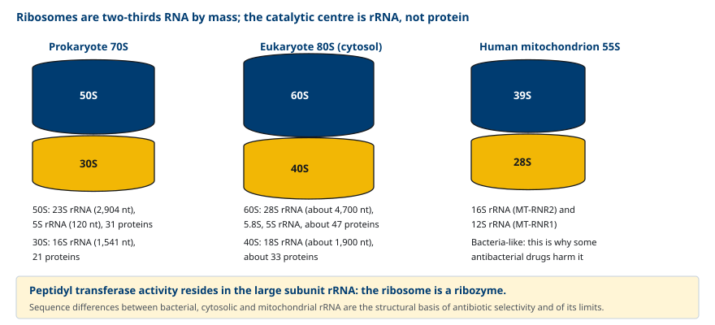
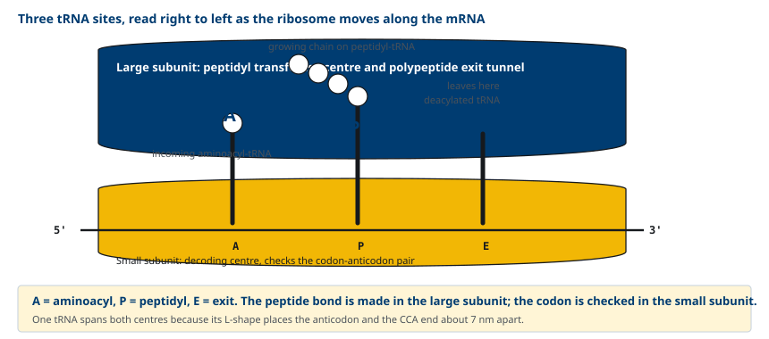
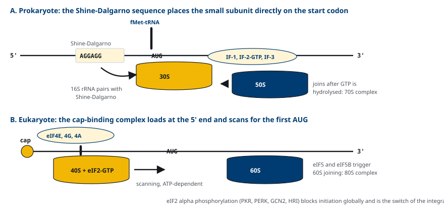
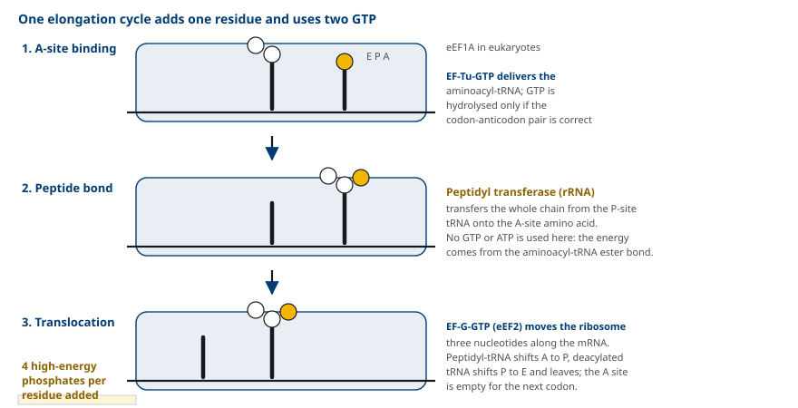
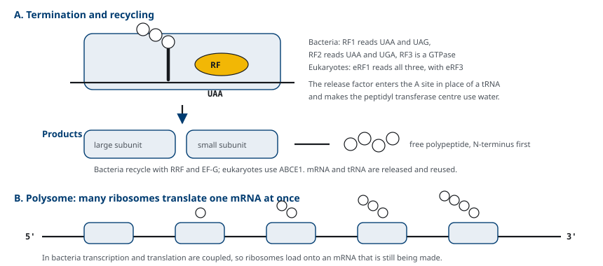
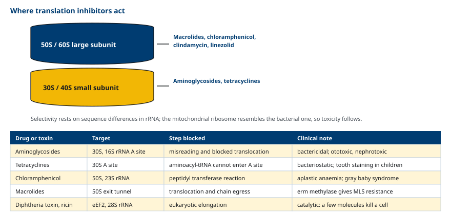

M03-W03-L03 · 분자유전학과 계통별 의학생화학특론
Ribosome과 번역의 단계
The Ribosome and the Steps of Translation
학습목표
- 원핵 70S와 진핵 80S ribosome의 구성을 rRNA와 단백질 단위로 비교한다.
- A·P·E 자리의 기능을 구분하고 해독 중심과 peptidyl transferase 중심의 위치를 설명한다.
- 원핵과 진핵의 번역 개시 과정을 개시 코돈 선택 방식의 차이로 설명한다.
- 신장 주기의 세 단계를 적고 각 단계에서 소비되는 고에너지 결합을 계산한다.
- 종결과 ribosome 재순환 과정을 release factor의 작용으로 설명한다.
- 번역을 표적으로 하는 주요 항생제의 결합 부위와 저해 단계를 연결하고 선택독성의 근거와 한계를 설명한다.
선수지식
- M03-W03-L02 유전암호와 tRNA의 역할 — 코돈, anticodon, aminoacyl-tRNA의 생성
- M03-W03-L01 Splicing 이상과 질환 — 성숙 mRNA의 구조, 5' cap과 poly(A)
- M01-W03-L01 단백질의 1차 구조 — peptide 결합의 성질과 N·C 말단의 정의
강의 구성
- 1. Ribosome의 구성과 촉매 능력
- 2. A, P, E 자리와 두 개의 기능 중심
- 3. 번역의 개시
- 4. 신장 주기
- 5. 종결과 ribosome의 재순환
- 6. 번역 속도와 번역 중 일어나는 사건
- 7. 번역을 표적으로 하는 항생제
- 8. 선택독성의 한계와 임상적 결과
1. Ribosome의 구성과 촉매 능력
Ribosome은 mRNA의 코돈을 읽어 아미노산을 순서대로 이어 붙이는 ribonucleoprotein 복합체다. 크기가 다른 두 소단위로 이루어지며, 두 소단위는 번역을 하지 않을 때는 분리되어 있다가 개시 과정에서 결합한다.
| 항목 | 원핵(대장균) | 진핵(세포질) | 사람 미토콘드리아 |
|---|---|---|---|
| 전체 | 70S | 80S | 55S |
| 대단위 | 50S: 23S(2,904 nt) + 5S(120 nt) rRNA + 단백질 31종 | 60S: 28S + 5.8S + 5S rRNA + 단백질 약 47종 | 39S: 16S rRNA(MT-RNR2) |
| 소단위 | 30S: 16S(1,541 nt) rRNA + 단백질 21종 | 40S: 18S rRNA + 단백질 약 33종 | 28S: 12S rRNA(MT-RNR1) |
S는 침강계수(Svedberg 단위)이고 질량이 아니라 침강 속도를 나타내므로 소단위의 S 값이 더해져 전체 S 값이 되지 않는다(50S + 30S = 70S).
구성에서 두 가지를 기억해야 한다. 첫째, ribosome의 질량은 약 2/3가 RNA다. 둘째, peptide 결합을 만드는 촉매 활성은 단백질이 아니라 대단위의 rRNA에 있다. 즉 ribosome은 ribozyme이다. 단백질은 구조를 안정화하고 인자들의 결합을 돕는다.

사람 미토콘드리아는 자체 ribosome을 가지고 있고, 그 rRNA와 구조는 세포질 ribosome보다 세균 ribosome에 가깝다. 이 사실은 이 수업의 마지막 두 절에서 항생제의 부작용을 설명하는 근거가 된다.
2. A, P, E 자리와 두 개의 기능 중심
Ribosome에는 tRNA가 들어앉는 자리가 세 개 있고 각각 역할이 다르다.
- A 자리(aminoacyl): 들어오는 aminoacyl-tRNA가 결합한다. 다음에 붙을 아미노산이 여기 온다.
- P 자리(peptidyl): 지금까지 만들어진 polypeptide를 달고 있는 peptidyl-tRNA가 있다.
- E 자리(exit): 아미노산을 넘겨준 뒤 비어 있는 tRNA가 떠나기 전에 잠시 머문다.
각 자리는 두 소단위에 걸쳐 있다. 소단위 쪽에서는 anticodon과 코돈의 짝짓기를 검사하고(해독 중심), 대단위 쪽에서는 peptide 결합을 만든다(peptidyl transferase 중심). 두 중심이 떨어져 있으므로 tRNA의 L자형 구조가 두 자리를 동시에 이어야 한다.

대단위에는 만들어진 polypeptide가 빠져나가는 출구 터널이 있다. 길이가 약 30~40개 아미노산에 해당하므로, 사슬의 N 말단 부분은 번역이 끝나기 전에 ribosome 밖으로 나와 접히기 시작한다. 터널 출구 주변에 chaperone과 signal recognition particle이 모여 있는 구조적 근거이고, 다음 수업에서 다루는 공동번역 사건의 전제다.
mRNA의 이동 방향과 polypeptide가 자라는 방향을 혼동하지 않아야 한다. ribosome은 mRNA를 5'→3' 방향으로 읽고, polypeptide는 N 말단에서 C 말단 방향으로 자란다.
3. 번역의 개시
개시는 세 단계로 이루어진다. 개시 tRNA가 P 자리에 놓이고, 소단위가 개시 코돈 위에 정확히 자리 잡고, 대단위가 결합한다. 원핵과 진핵의 차이는 개시 코돈을 어떻게 찾는가에 있다.
원핵세포 개시 코돈 상류 약 8~13 뉴클레오타이드에 Shine-Dalgarno 서열(purine이 풍부한 서열)이 있고, 16S rRNA의 3' 말단 부분과 염기쌍을 이룬다. 이 짝짓기가 30S 소단위를 개시 코돈 위에 바로 놓는다. 개시 tRNA에는 N-formylmethionine이 달려 있고, 개시인자 IF-1, IF-2, IF-3가 작용한다. IF-2는 GTP를 결합한 상태로 들어와 GTP 가수분해와 함께 떨어져 나가고 50S가 결합한다.
한 mRNA에 Shine-Dalgarno 서열이 여러 개 있을 수 있으므로, 원핵세포의 mRNA는 여러 단백질을 담은 polycistronic mRNA가 될 수 있다.
진핵세포 Shine-Dalgarno 서열이 없다. 대신 5' cap을 인식하는 복합체가 mRNA의 5' 말단에 먼저 결합하고, 거기서부터 하류로 훑어 내려가 처음 만나는 AUG에서 개시한다.
- eIF4E가 cap에 결합하고, eIF4G가 eIF4E와 PABP를 연결하며, eIF4A가 ATP를 써서 mRNA의 2차 구조를 풀어 준다.
- eIF2-GTP가 Met-tRNA를 40S에 실어 온다.
- 훑어 내려가다 AUG를 만나면 eIF5와 eIF5B가 작용해 GTP가 가수분해되고 60S가 결합한다.
- 개시 코돈의 주변 서열(Kozak 서열, 특히 -3 위치의 purine과 +4의 G)이 개시 효율을 좌우한다.
진핵세포의 mRNA는 거의 모두 monocistronic이다.

4. 신장 주기
신장(elongation)은 같은 세 단계가 아미노산 하나당 한 번씩 반복되는 주기다. 진핵세포의 인자 이름은 원핵세포와 다르지만 기능은 같다.
(1) A 자리 결합 EF-Tu(진핵에서는 eEF1A)가 GTP와 함께 aminoacyl-tRNA를 A 자리로 데려온다. 코돈과 anticodon이 올바르게 짝지어졌을 때만 GTP 가수분해가 효율적으로 일어나므로, 이 단계가 해독의 정확성을 걸러내는 지점이다. 잘못 결합한 tRNA는 GTP 가수분해 전에 떨어져 나갈 시간을 갖는다.
(2) Peptide 결합 형성 대단위 rRNA의 peptidyl transferase 활성이 P 자리 tRNA에 달린 polypeptide 전체를 A 자리 아미노산의 아미노기로 옮긴다. 사슬이 새 아미노산으로 옮겨 가는 것이지 아미노산이 사슬에 붙는 것이 아니다. 이 반응에는 ATP도 GTP도 쓰이지 않는다. 필요한 에너지는 aminoacyl-tRNA의 에스터 결합에 이미 저장되어 있다.
(3) Translocation EF-G(진핵에서는 eEF2)가 GTP를 가수분해하며 ribosome을 mRNA 위에서 세 뉴클레오타이드 전진시킨다. 그 결과 peptidyl-tRNA가 A에서 P로, 비어 있는 tRNA가 P에서 E로 옮겨 가고 A 자리가 비어 다음 코돈이 노출된다.

에너지 비용을 정리하면 아미노산 하나를 붙이는 데 고에너지 인산 결합 4개가 쓰인다.
| 단계 | 소비 | 고에너지 결합 |
|---|---|---|
| tRNA 충전 | ATP → AMP + 2 Pi | 2 |
| EF-Tu의 A 자리 결합 | GTP → GDP + Pi | 1 |
| EF-G의 translocation | GTP → GDP + Pi | 1 |
따라서 아미노산 300개의 단백질 하나에 약 1,200개의 고에너지 결합이 들어간다. 단백질 합성이 세포의 에너지 소비에서 큰 몫을 차지하는 이유이고, 영양 결핍이나 허혈에서 번역이 먼저 억제되는 이유다.
5. 종결과 ribosome의 재순환
A 자리에 종결 코돈이 들어오면 그에 맞는 tRNA가 없으므로 대신 release factor가 결합한다.
- 원핵세포: RF1은 UAA와 UAG를, RF2는 UAA와 UGA를 인식하고, RF3는 GTPase로서 방출을 돕는다.
- 진핵세포: eRF1 하나가 세 종결 코돈을 모두 인식하고 eRF3가 GTPase로 작용한다.
Release factor는 A 자리에 들어가 peptidyl transferase 중심이 아미노산 대신 물을 받아들이게 만든다. 그 결과 peptidyl-tRNA의 에스터 결합이 가수분해되어 polypeptide가 방출된다.
이어서 소단위가 분리되고 mRNA와 tRNA가 떨어져 나간다. 원핵세포는 ribosome recycling factor와 EF-G가, 진핵세포는 ABCE1이 이 과정을 수행한다. 구성 요소가 모두 재사용되므로 ribosome의 수는 번역량에 비해 적어도 된다.

하나의 mRNA에는 여러 ribosome이 동시에 올라탄다. 이 상태를 polysome(polyribosome)이라 하고, ribosome 사이 간격은 약 80 뉴클레오타이드다. Polysome 덕분에 mRNA 한 분자에서 짧은 시간에 여러 개의 단백질이 만들어진다. 원핵세포에서는 전사와 번역이 결합(coupled)되어 있어 전사가 끝나기 전에 ribosome이 올라타지만, 진핵세포는 전사와 번역이 핵과 세포질로 분리되어 있어 그럴 수 없다.
6. 번역 속도와 번역 중 일어나는 사건
번역 속도는 원핵세포에서 초당 약 15~20 아미노산, 진핵세포에서 초당 약 2~6 아미노산이다. 이 속도와 출구 터널의 길이가 맞물려 번역이 끝나기 전에 시작되는 사건들이 생긴다.
- 공동번역 접힘: N 말단 부분이 터널을 나오면서 바로 접히기 시작하고, chaperone이 여기에 붙어 잘못된 접힘을 막는다.
- ER로의 표적화: 분비 단백질과 막 단백질의 N 말단 signal sequence가 터널을 나오면 signal recognition particle이 결합해 번역을 잠시 멈추고 ribosome 전체를 rough ER 막으로 데려간다.
- 공동번역 수정: N 말단의 formylmethionine이나 methionine 제거, N 말단 acetylation이 번역 중에 일어난다.
- 품질 관리: 번역이 비정상적으로 멈춘 ribosome은 ribosome-associated quality control에 의해 해체되고 미완성 사슬은 분해로 보내진다.
이 사건들은 다음 수업(번역 후 수정과 단백질 접힘)의 주제이므로 여기서는 번역과 분리된 별개의 과정이 아니라 번역과 겹쳐 일어나는 과정이라는 점만 확인한다.
7. 번역을 표적으로 하는 항생제
세균과 진핵세포의 ribosome은 구조가 충분히 달라서, 세균 ribosome에만 결합하는 약물을 만들 수 있다. 번역 저해제는 항균제에서 가장 큰 계열 중 하나다.

| 계열 | 대표 약물 | 결합 부위 | 저해 단계 | 성질 |
|---|---|---|---|---|
| Aminoglycoside | Gentamicin, amikacin, streptomycin | 30S, 16S rRNA의 A 자리 | 코돈 오독 유발, translocation 방해 | 살균 |
| Tetracycline | Doxycycline, minocycline | 30S의 A 자리 | aminoacyl-tRNA의 A 자리 결합 차단 | 정균 |
| Macrolide | Erythromycin, azithromycin | 50S, 23S rRNA의 출구 터널 | translocation과 사슬 배출 차단 | 정균 |
| Lincosamide | Clindamycin | 50S, macrolide와 겹치는 부위 | peptidyl transferase 반응 | 정균 |
| Chloramphenicol | Chloramphenicol | 50S의 peptidyl transferase 중심 | peptide 결합 형성 | 정균 |
| Oxazolidinone | Linezolid | 50S, 23S rRNA | 70S 개시 복합체 형성 | 정균 |
작용 지점을 알면 임상적 성질이 설명된다.
- Aminoglycoside만 살균 작용을 보인다. 단순히 번역을 멈추는 것이 아니라 코돈을 잘못 읽게 해 기능이 없는 단백질을 만들게 하고, 그 단백질이 세균 막에 끼어 들어 약물이 더 들어오게 만드는 자가증폭이 일어나기 때문이다.
- Macrolide와 clindamycin은 결합 부위가 겹친다. 그래서 23S rRNA를 methylation하는 erm 유전자 하나로 macrolide, lincosamide, streptogramin에 동시에 저항성이 생긴다(MLS 저항성). 임상에서 erythromycin 저항성이 확인된 균주의 clindamycin 감수성을 D-test로 확인하는 근거다.
- 번역 저해제 중 일부는 농도에 따라 정균과 살균이 바뀌고, 세포 내 농축 여부에 따라 세포내 세균에 대한 효과가 달라진다. Macrolide와 tetracycline이 세포 내 농도가 높아 비전형 폐렴 원인균에 쓰이는 이유다.
실험실에서 쓰이는 저해제도 작용 지점으로 구분된다. Puromycin은 aminoacyl-tRNA의 구조 유사체로 A 자리에 들어가 사슬을 조기 방출시키며 원핵과 진핵 모두에 작용한다. Cycloheximide는 진핵 60S에 결합해 translocation을 막으므로 치료에 쓸 수 없고 실험 도구로만 쓴다.
8. 선택독성의 한계와 임상적 결과
항생제의 선택독성은 완전하지 않다. 한계가 생기는 지점은 두 곳이다.
(1) 미토콘드리아 ribosome 미토콘드리아 ribosome의 rRNA는 세균형에 가까우므로 일부 항생제가 여기에도 결합한다.
- Linezolid는 미토콘드리아 단백질 합성을 억제해 장기 투여 시 골수 억제, lactate 산증, 시신경병, 말초신경병을 일으킨다. 2주를 넘겨 쓸 때 혈구 수를 감시하는 근거다.
- Chloramphenicol은 가역적 골수 억제(용량 의존적)와 비가역적 무형성 빈혈(용량 비의존적)을 일으킨다. 신생아에서는 glucuronidation 능력이 낮아 축적되어 gray baby syndrome이 생긴다.
- Aminoglycoside의 비가역적 난청은 내이 유모세포의 미토콘드리아 ribosome 저해와 관련된다. *MT-RNR1*의 m.1555A>G 변이가 있으면 12S rRNA 구조가 세균형에 더 가까워져 치료 용량에서도 비가역적 난청이 생긴다. 모계 유전이므로 가족력이 있으면 투여 전 유전 검사를 고려한다.
(2) 조직 축적과 다른 기전의 독성 Aminoglycoside의 신독성은 근위 세뇨관 세포가 약물을 흡수해 축적하기 때문이고, tetracycline의 치아 변색과 성장판 영향은 칼슘과의 결합 때문이다. 이 독성은 ribosome 선택성과 무관하므로 약물의 구조에서 따로 설명해야 한다.
| 약물 | 미토콘드리아 ribosome 관련 독성 | 감시 항목 |
|---|---|---|
| Linezolid | 골수 억제, lactate 산증, 시신경병 | 혈구 수, 투여 기간, 시야 |
| Chloramphenicol | 가역적 골수 억제, gray baby syndrome | 혈구 수, 신생아 투여 회피 |
| Aminoglycoside | 비가역적 감각신경성 난청 | 청력, 혈중 약물 농도, MT-RNR1 가족력 |
| Tetracycline | (해당 없음) 칼슘 결합에 의한 치아·골 영향 | 8세 미만과 임신 중 회피 |
한편 번역 기구를 겨냥한 약물이 항균제만은 아니다. 이전 수업에서 본 mupirocin은 세균의 isoleucyl-tRNA synthetase를 억제하고, fusidic acid는 EF-G를 억제한다. 번역의 어느 단계든 약물의 표적이 될 수 있다는 점에서 번역 경로 전체를 약물 표적 지도로 보아야 한다.
확인 문항
Ribosome에서 peptide 결합을 만드는 활성이 단백질이 아니라 rRNA에 있다는 사실이 가지는 의미를 두 가지 들라.
해설
첫째, 생화학적으로 RNA가 촉매 능력을 가진다는 증거이며, 유전 정보 저장과 촉매를 모두 RNA가 담당했던 단계를 지나왔다는 설명과 맞닿는다. 둘째, 약물 설계의 관점에서 번역 저해제의 표적이 대부분 rRNA의 특정 서열과 구조라는 뜻이다. 그래서 rRNA 서열의 작은 차이가 선택독성을 만들고, 반대로 rRNA를 methylation하는 erm 같은 효소 하나로 여러 계열 약물에 동시에 저항성이 생긴다.
아미노산 하나를 polypeptide에 추가하는 데 소비되는 고에너지 인산 결합의 수를 단계별로 적고, peptide 결합 형성 자체에는 ATP나 GTP가 쓰이지 않는 이유를 설명하라.
해설
tRNA 충전에서 ATP가 AMP와 2 Pi로 분해되어 2개, EF-Tu(eEF1A)가 A 자리에 tRNA를 결합시킬 때 GTP 1개, EF-G(eEF2)의 translocation에서 GTP 1개로 모두 4개다. Peptide 결합 형성 단계에 추가 에너지가 들지 않는 것은, 충전 단계에서 소비한 에너지가 aminoacyl-tRNA의 고에너지 에스터 결합으로 이미 저장되어 있기 때문이다. Peptidyl transferase 반응은 그 에스터 결합을 peptide 결합으로 바꾸는 것이므로 열역학적으로 유리하다.
원핵세포의 mRNA는 polycistronic일 수 있지만 진핵세포의 mRNA는 거의 모두 monocistronic이다. 개시 기전의 차이로 설명하라.
해설
원핵세포는 개시 코돈 상류의 Shine-Dalgarno 서열이 16S rRNA와 염기쌍을 이루어 소단위를 해당 개시 코돈에 직접 올려놓는다. 따라서 한 mRNA 안에 Shine-Dalgarno 서열과 AUG의 조합이 여러 번 나타나면 각각이 독립적인 개시 지점이 되어 여러 단백질을 만들 수 있다. 진핵세포는 5' cap에 결합한 복합체가 5' 말단에서 하류로 훑어 내려가 처음 만나는 AUG에서 개시하므로, 그 뒤쪽에 있는 개시 코돈에는 원칙적으로 접근하지 못한다. 접근 방식의 차이가 한 mRNA가 담을 수 있는 유전 정보의 개수를 정한다.
적혈구 전구세포에서 heme이 부족할 때 globin 합성이 멈추는 기전과 그 생리적 의미를 설명하라.
해설
Heme이 부족하면 heme-regulated inhibitor(HRI)가 활성화되어 eIF2의 α 소단위를 인산화한다. 인산화된 eIF2는 Met-tRNA를 40S에 실어 오지 못하므로 번역 개시가 전반적으로 멈추고 globin 합성도 중단된다. 생리적 의미는 양의 짝맞춤이다. Heme과 globin은 1:1로 결합해야 하므로 어느 한쪽이 남으면 짝을 찾지 못한 분자가 침전하거나 산화 손상을 일으킨다. 개시 단계에서 globin 합성을 heme 공급에 맞추면 이 손상을 막을 수 있다. 이 조절이 작동하지 않는 상황이 thalassemia에서 짝 없는 사슬이 침전해 적혈구를 파괴하는 기전이다.
Aminoglycoside는 번역 저해제 중 거의 유일하게 살균 작용을 보인다. 그 근거를 작용 기전으로 설명하라.
해설
다른 번역 저해제는 단백질 합성을 멈추게 할 뿐이므로 약물을 제거하면 세균이 회복한다. Aminoglycoside는 30S의 16S rRNA A 자리에 결합해 코돈을 잘못 읽게 하고 translocation을 방해한다. 그 결과 합성이 멈추는 데 그치지 않고 아미노산 서열이 틀린 비정상 단백질이 만들어지며, 이 단백질이 세균의 세포막에 끼어 들어 투과성을 높여 약물이 더 많이 들어오게 한다. 자가증폭되는 손상이 더해져 비가역적인 살균 효과가 나타난다.
어떤 환자가 감염 치료로 aminoglycoside를 표준 용량 투여했는데 첫 투여 후 비가역적 난청이 발생했다. 어떤 기전을 의심하고 가족에게 무엇을 확인해야 하는가.
해설
미토콘드리아 12S rRNA 유전자 *MT-RNR1*의 변이, 특히 m.1555A>G를 의심한다. 이 변이가 있으면 미토콘드리아 12S rRNA의 구조가 세균 16S rRNA에 더 가까워져 치료 용량의 aminoglycoside가 내이 유모세포의 미토콘드리아 번역을 억제하고 비가역적 감각신경성 난청을 일으킨다. 미토콘드리아 유전체는 모계로만 전달되므로 어머니와 외가 쪽 형제·자매에게 난청이나 항생제 투여 후 청력 손실의 병력이 있는지 확인해야 하고, 해당 가계에서는 투여 전 유전 검사와 대체 항생제 선택을 고려한다.
Erythromycin에 저항성을 보이는 Staphylococcus aureus 균주에서 clindamycin 감수성 결과가 나왔을 때, 그 결과를 그대로 믿고 clindamycin을 쓰기 어려운 이유를 설명하라.
해설
Macrolide와 lincosamide는 50S의 23S rRNA에서 결합 부위가 겹친다. erm 유전자가 암호화하는 methylase가 23S rRNA를 methylation하면 두 계열 모두에 저항성이 생긴다(MLS 저항성). 그런데 erm이 유도성으로 발현되는 균주는 macrolide 노출 없이는 methylase를 만들지 않아 일반 감수성 검사에서 clindamycin 감수성으로 보인다. 치료 중 유도되어 저항성이 나타날 수 있으므로 디스크를 인접 배치하는 D-test로 유도 저항성을 확인한 뒤 결정한다.
Linezolid를 4주간 투여한 환자에서 빈혈과 혈소판 감소, lactate 상승이 나타났다. 선택독성의 관점에서 이 현상을 설명하라.
해설
Linezolid는 세균 50S의 23S rRNA에 결합해 70S 개시 복합체 형성을 막는다. 사람 미토콘드리아 ribosome의 rRNA는 세포질 ribosome보다 세균형에 가까워 이 약물이 미토콘드리아 번역도 억제한다. 미토콘드리아에서 번역되는 13개 단백질은 모두 산화적 인산화 복합체의 구성 요소이므로, 억제가 누적되면 ATP 생산이 줄고 pyruvate가 lactate로 돌아가 lactate 산증이 생기며, 분열이 빠른 골수에서 조혈이 억제되어 빈혈과 혈소판 감소가 나타난다. 즉 선택독성이 세균과 사람 세포질 사이에서는 성립하지만 세균과 사람 미토콘드리아 사이에서는 불완전하다. 장기 투여 시 혈구 수와 lactate, 시야를 감시해야 하는 근거다.
참고문헌
- Ferrier DR (ed). Lippincott Illustrated Reviews: Biochemistry. Chapter 32, Protein Synthesis.
- Ramakrishnan V. Ribosome structure and the mechanism of translation. Cell 2002;108:557–572.
- Rodnina MV. Translation in prokaryotes. Cold Spring Harb Perspect Biol 2018;10:a032664.
- Hinnebusch AG, Lorsch JR. The mechanism of eukaryotic translation initiation: new insights and challenges. Cold Spring Harb Perspect Biol 2012;4:a011544.
- Wilson DN. Ribosome-targeting antibiotics and mechanisms of bacterial resistance. Nat Rev Microbiol 2014;12:35–48.
- Prezant TR et al. Mitochondrial ribosomal RNA mutation associated with both antibiotic-induced and non-syndromic deafness. Nat Genet 1993;4:289–294.
- Garrabou G et al. Reversible inhibition of mitochondrial protein synthesis during linezolid-related hyperlactatemia. Antimicrob Agents Chemother 2007;51:962–967.